复线性代数、纠缠与噪声
吃透左共轭内积、Bloch 球旋转、偏迹、Schmidt 分解、CHSH 非局域博弈与 CPTP 信道，用密度矩阵彻底分清纯态干涉与退相干混态。
进入第 02 章 · 单量子比特 →开源系统教程 · 零跳步数学推导 × 纯标准库复算 × 硬件容错闭环
量子加速并不来自“同时试完所有答案”的口号，而来自让正确路径的复振幅相长叠加、错误路径相消归零。全书从二维列向量手算出发，贯通核心算法、物理脉冲、表面码纠错、后量子密码、精密传感与经典模拟铁壁。
100% 离线自包含（支持 file:// 本地双击与 GitHub Pages）· 按 ⌘K / Ctrl+K 秒搜全书 1,300+ 节与 151 条核心术语
全书知识架构 · 26 章 5 大教学篇
从两维列向量到百万比特容错资源账本，把数学语言、量子算法、硬件控制、纠错解码、后量子安全与经典模拟铁壁放进同一条逻辑主线，每章均附可复算小例与失效边界。
吃透左共轭内积、Bloch 球旋转、偏迹、Schmidt 分解、CHSH 非局域博弈与 CPTP 信道，用密度矩阵彻底分清纯态干涉与退相干混态。
进入第 02 章 · 单量子比特 →串讲相位回踢、Grover 放大、QFT/QPE、Shor 周期提取、哈密顿量模拟、VQE 贫瘠高原、去量子化检验以及 LCU → QSVT → GQSP 统一框架。
进入第 06 章 · 算法原语 →对比超导、离子阱、中性原子、光子、硅自旋与拓扑平台，贯通 Rabi/Ramsey 驱动、Weyl 室 KAK 分解、ZX 演算、DRAG 脉冲与动态解耦。
进入第 09 章 · 主流硬件平台 →从五比特完美码、d=3 旋转表面码与晶格手术，到 qLDPC、魔法态培育、实时解码尾延迟、制冷热预算与九步应用级容错资源账本。
进入第 10 章 · 量子纠错 →辨析 NIST 后量子标准（ML-KEM / HQC）与 BB84/E91/三代量子中继；零跳步推导 QFI、SQL 与海森堡极限、Huelga 退相位坍塌与光学压缩。
进入第 20 章 · 量子传感 →以数据处理不等式串联四类信道容量与复杂度类；手算稳定子辛表、MPS 逐键 SVD 与含噪 Pauli 传播四关判据，独立核查“量子优势”声明。
进入第 21 章 · 经典模拟边界 →直觉预览 × 真实机制 × 同步量子声化
下面两张互动展卡直接对应全书最核心的两个分水岭——第 03 章的 Bell/CHSH 非局域性检验与第 10 章的 d=3 表面码纠错界；随后可用同一时间轴试听五段确定性教学合成声波。
第 03 章核心机制 · Bell 态与 CHSH 非局域博弈
Alice 与 Bob 收到随机比特 x, y ∈ {0,1}，互不通信但需让输出满足 a ⊕ b = x·y。任意经典局域隐变量策略在 4 种提问中至多赢 3 种（75%）；共享 Bell 态 |Φ⁺⟩ 按 22.5° 夹角旋转测量轴，4 种提问的胜率同时达到 cos²(π/8) ≈ 85.36%。
第 10 章核心机制 · d = 3 旋转表面码症状解码
[[9, 1, 3]] 旋转表面码用 9 颗数据比特与 8 个稳定子面编码 1 颗逻辑比特。单比特 X₅ 错点亮相邻两盏 Z 症状灯，最小权重解码精准还原；但双比特 X₄X₅ 错使中间症状奇偶抵消，解码器改选更短的 X₆ 修正链，与原错拼成逻辑 X̄！
同步多轨量子声化试听 · A01 & A02
三路音频共享同一 4.0 秒教学时间轴与固定数字增益（不做单轨峰值归一化），互斥播放防止空气混音干扰。点击下方同步时间点按钮，重点听清 2.4s 之后退相干轨收敛到稳态常音（P₀→1/2），而不是衰减成静音。
恒定最大包络 0.400 · RMS 0.2824
包络 0.4|cos(πt)| · 每半整数秒清零
包络 0.4√P₀(t) · 趋向稳态 0.4/√2 ≈ 0.283
声化物理映射与边界声明：全部 5 段音频均由 codes/practice/generate_audio.py 程序确定性合成（22050 Hz 单声道 16-bit PCM WAV，时长 4.0 s，440 Hz 正弦载波，单分量固定增益 0.2，首尾 10 ms 线性淡入淡出，不做单轨独立归一化），将 Born 概率平方根映射为瞬时包络 A(t) = 0.4√P₀(t)（均方声能类比测量概率）。这些音频绝非量子芯片实验设备实录；经典声压、量子复振幅与单次离散测量坍缩不可混为一谈。
分阶段学习路线图
全书保留 00–21 与 Q1–Q4 稳定编号，按教学依赖排为五篇；你也可以开启内页顶栏的「初学主线模式」一键折叠进阶证明，一刷抓核心，二刷补深潜。
先花 10 分钟做七道先修自测，再拿草稿纸走完二维列向量、双缝实验、Bloch 球、Bell 纠缠、基础电路与 CPTP 噪声信道。
打通相位回踢、Grover、QPE、Shor 与 QSVT 统一框架，用 20 行纯标准库手写模拟器、做 Wilson 区间统计并掌握四大 SDK 与模拟边界。
从约瑟夫森结非谐性与色散读出出发，贯穿超导/离子阱/中性原子/光子硬件、Weyl 室编译、表面码晶格手术、实时解码与容错账本。
面向科研切入：一次打通 NIST 后量子迁移、三代量子中继、海森堡极限与核钟传感、量子信息熵界、连续变量 GKP 与七大计算模型。
常备工具书： 全局符号表与公式速查 术语表（151 词条） 271 道零跳步题答 参考文献与证据分级 逐章实验手册 31 个开源项目对照
从纸面推导走向硬件验证与全介质离线交付
不把小规模模拟冒充硬件复现，不把抽象查询数冒充墙钟加速。全书每一条工程链路均给出参数单位、资源账本、可运行脚本与自动化验收门禁。
覆盖 transmon / fluxonium / 中性原子 / 光子物理参数、Weyl 室最优双比特综合、ZX 演算全局 T-count 压缩、DRAG 抗泄漏整形、动态解耦与 M3/TREX 读出缓解。
剖析表面码时空探测事件图、晶格手术逻辑门、魔法态培育（MSC）、MWPM / Union-Find / BP+OSD 解码尾延迟约束、制冷热预算与九步应用级容错资源账本。
提供 38 个纯标准库本地复算脚本（含稳定子表、MPS 与 Pauli 传播引擎），并系统对照 31 个开源项目 122 份固定提交源码与隔离环境实跑核验。
ALL-MEDIA OFFLINE PUBLISHING · 同源零失真构建
同一套 Markdown 与双主题 SVG 源码同源编译：支持在线阅读、双击离线网站、A4 印刷级 PDF（含三层书签与内部跳转）及原生 MathML 3 EPUB 3 电子书。
dist/quantum-computing-handbook.pdf · 50,900+ 公式、完整三层书签与内部交叉链接
dist/quantum-computing-handbook.epub · Apple Books / Calibre 原生流式排版
PDF / EPUB / 完整离线网站 ZIP / 自编代码 ZIP / SHA256SUMS.txt，解压双击 index.html 即用
SHA256SUMS.txt · 核对 PDF / EPUB / 离线网站 ZIP / 自编代码 ZIP 字节完整性
面向第一次系统学习量子计算的读者，也面向希望补齐数学、物理、算法、硬件、传感与经典模拟基础的入门研究生。
版本：2026-11-25。时效性硬件指标、开源生态与标准进展均标明对应日期与证据类型，引用前建议对照一手资料核验。
打开离线排版阅读版：包含完整的预渲染公式排版、离线全书检索（Cmd/Ctrl+K）、初学主线一键折叠进阶选读、五篇 26 章目录与全介质亮/暗双主题科学插图。在手机上可展开“本页导航”快速跳转到小节，复杂图表可点击打开原尺寸查看。整套 reader/ 目录可完整复制到其他电脑后离线阅读；仓库同时提供 6 模块零安装离线交互量子实验台（reader/lab/quantum-lab.html）以及面向打印与移动阅读的合订本 PDF（dist/quantum-computing-handbook.pdf）和原生 MathML 3 EPUB 3 电子书（dist/quantum-computing-handbook.epub）。外部参考文献链接仍需联网打开。
量子计算横跨线性代数、概率统计、量子物理、计算复杂性与系统工程。不少入门读物只停留在“叠加、纠缠、同时算”的口号上，很容易给初学者留下三个误解：量子比特能同时存下两个经典答案；一次测量能读出所有振幅；量子计算机迟早会全面替代普通电脑。
本书换一种讲法：从拿张草稿纸就能算透的二维和四维小例子出发，把直觉画面、数学定义、零跳步手算、物理器件与经典模拟边界放在同一条主线上。读完核心章节后，你将能够：
开始之前，可以先做一套七道先修自测与补习路线，花十分钟检查自己对条件概率、复数模平方、矩阵乘法、张量积、模运算和抽样波动的熟悉程度；哪里卡住就跳去补哪一小节，不必从头重修整套大学课程。
先把数学学到够用，再走进物理与线路；学完核心算法立刻掌握动手与统计工具；最后按兴趣攻克硬件全栈、通信传感与前沿理论。 全书共 26 章（主篇 00–21 与量子力学基础篇 Q1–Q4），保留所有历史编号稳定不变，按教学依赖排成五篇：

阅读版的侧栏目录与上下章翻页按钮严格遵循以下 26 章完整教学顺序：
00 → 01 → Q1 → 02 → Q2 → 03 → 04 → 0506 → 07 → 08 → 15Q3 → 09 → 14 → 10 → 11 → 1912 → 2013 → 16 → 21 → 17 → Q4（进阶选读）→ 18其中，第 15 章前移至第二篇末尾，让你学完基础算法后立刻拿到态矢量模拟、有限采样统计、论文红旗与四大 SDK 对照工具；第 14 章紧接 Q3 → 09 打通能级、硬件与脉冲编译链；Q4 安排在第 18 章之前作为微积分进阶选读桥，为连续变量相空间与 GKP 网格码做好铺垫。你也可以随时从量子力学基础篇导读按需跳读 Q1–Q4。
你可以按自己的背景挑一条顺手的入口：
00 → 01 → Q1 → 02 → Q2 → 03 → 04 → 05，再进入第二篇 06 → 07 → 08 → 15，随后按兴趣分流至第三、四或五篇。→ 09 → 14 → 10 → 11 → 19；想亲手推导势阱、谐振子、WKB 双势阱劈裂与原子超精细能级时补读 Q4。02–08 后重点精读第 15 章、第 14 章与第 21 章。04, 06, 07）、纠错解码与资源账本（10, 11）、量子精密测量（20）以及稳定子/张量网络经典模拟边界（21）。第一遍读的时候，不必一口气啃完所有“进阶回看”。先看清每一节在解决什么困惑，跟着最小算例把输入、中间步骤和输出写在草稿纸上；确认数字能自己算对，再回头细看一般定理和适用边界。一个很稳的检验节奏是：
00、01、Q1、02 后，能不看书算出 的测量概率和 的确定结果；03、04 后，能独立手算 Bell 态的约化密度矩阵、CHSH 博弈的 胜率，以及隐形传态里的一个条件分支；05、06、07、15 后，能分清退极化与退相位在 Bloch 球上的区别、写出 20 行态矢量模拟并给出带置信区间的采样结论；20、21 后，能讲清退相位下 GHZ 态为何输给独立探针，以及 Clifford/MPS/Pauli 传播各自在什么条件下被经典击穿。| 章节 | 核心问题 | 建议先修 |
|---|---|---|
| 00｜全景：量子计算是什么，又不是什么 | 量子科技三大支柱如何分工？复振幅相消与经典内存墙意味着什么？ | 无 |
| 01｜零基础数学工具：看懂量子计算的最小数学语言 | 复数旋转、左共轭内积、酉阵、谱分解、条件数与张量积怎样手算？ | 高中代数 |
| Q1｜从实验认识量子态 | 双缝、MZI、Elitzur–Vaidman 炸弹、Stern–Gerlach 与量子擦除怎样逼出复振幅？ | 01 |
| 02｜单量子比特：状态、相位、旋转与测量 | 相对相位、Bloch 球、 门、投影测量、POVM 与量子仪器是什么？ | 01、Q1 |
| Q2｜可观测量与量子态的时间演化 | 厄米算符、CSCO、不确定关系、三绘景、Magnus 展开与 Lindblad 主方程怎样相连？ | Q1、02 |
| 03｜多量子比特、量子纠缠与非局域性 | 张量积、偏迹、Schmidt 分解、PPT 判据与 CHSH 合作博弈怎样算？ | 01–02 |
| 04｜量子门、电路与基础协议 | 如何把电路译成矩阵？Toffoli 反计算、不可克隆、隐形传态与延迟测量如何工作？ | 01–03 |
| 05｜混态、噪声与量子信道 | 为何必须用密度矩阵与 CPTP 信道？五大噪声、广义振幅阻尼与 Landauer 擦除下限如何量化？ | 01–04 |
| 章节 | 核心问题 | 建议先修 |
|---|---|---|
| 06｜量子算法的共同骨架 | 预言机、相位回踢、振幅放大、QFT、QPE、Trotter、Hadamard 测试与 QRAM 瓶颈怎样串起算法？ | 01–05 |
| 07｜代表性量子算法：从隐藏周期到量子模拟 | Simon、Grover、Shor、哈密顿量模拟、HHL 与去量子化为何以及何时成立？ | 06 |
| 08｜应用、变分算法与证据边界 | 费米子映射、VQE、QAOA、参数移位法则、贫瘠高原、QEM、SQD 与量子优势四类证据怎么评？ | 05–07 |
| 15｜实践路线：从手算、模拟到真机实验与论文复核 | 怎样手写 模拟器、做 Wilson/Clopper–Pearson 统计、按红旗读论文并上手四大 SDK？ | 01–08 |
| 章节 | 核心问题 | 建议先修 |
|---|---|---|
| Q3｜从能级到物理量子比特 | 约瑟夫森结非谐性、Rabi 振荡、Ramsey/Hahn 回波、三能级泄漏与 cQED 色散读出怎样推导？ | Q2、02 |
| 09｜主流硬件平台与物理噪声特性 | 超导、离子阱、中性原子、光子、硅自旋与拓扑六大平台机制、SPAM 不确定度与现实瓶颈是什么？ | 02–05、Q3 |
| 14｜从算法电路到物理执行：编译、调度与控制 | Euler/KAK/Weyl 室、ZX 演算、Virtual-Z、SABRE、DRAG/DD/GRAPE、M3/TREX、线路切割与 Litinski 容错编译如何衔接？ | 04、05、09、Q3 |
| 10｜量子纠错与容错计算 | 不可克隆下如何纠错？五比特码、Toric 任意子、表面码、晶格手术、qLDPC 与魔法态培育如何工作？ | 03–05、14 |
| 11｜基准测试与容错资源估算 | RB、EPLG、GST、实时解码延迟、九步容错资源账本与 RSA-2048 估算怎样核算？ | 07、09–10 |
| 19｜可维护量子系统工程 | 制冷热预算、3D 封装、校准依赖 DAG、玻色猫比特实证、FIFO 排队 SLA 与可用率怎样撑起整机？ | 09–11、14 |
| 章节 | 核心问题 | 建议先修 |
|---|---|---|
| 12｜量子密码、后量子安全与量子网络 | Shor、NIST 后量子标准（ML-KEM/HQC/IR 8547）、BB84/E91/TF-QKD/DI-QKD、PLOB 界与三代量子中继是什么关系？ | 04、07、10 |
| 20｜量子传感与量子精密测量：从 Fisher 信息到海森堡极限 | CFI/QFI、SQL 与海森堡极限、Huelga 退相位坍塌、原子钟阿兰偏差与 核钟、冷原子重力仪、量子照明、自旋与光学压缩（LIGO O4）及 HNLS 纠错传感怎么算？ | 03、05、Q3、13（光学压缩已内置正交分量微卡片） |
| 章节 | 核心问题 | 建议先修 |
|---|---|---|
| 13｜量子信息量度：熵、距离与可提取信息 | 熵、负条件熵与状态合并、数据处理不等式、迹距离、Helstrom 判别、剩余哈希引理与量子热力学资源论怎样计算？ | 03、05 |
| 16｜高级算法与验证：从查询下界、统一框架到可信输出 | 查询下界、量子行走、LCU→显式 QSVT→GQSP 统一框架、经典阴影与可扩展验证如何衔接？ | 06–08、13 |
| 21｜稳定子形式、经典模拟引擎与量子优势边界 | 稳定子辛表、魔术度与稳定子秩、匹配门、MPS/2D PEPS/BP-TN 与含噪 Pauli 传播如何划定经典可模拟与量子加速边界？ | 03–05、10、15 |
| 17｜量子计算模型：门、测量、绝热、退火、拓扑与模拟 | 门模型、MBQC、FBQC、绝热、退火端到端 TTS、拓扑任意子编织、ETH/MBL/PXP 多体疤痕与模拟模拟器如何在同一标尺比较？ | 04、07、09、14 |
| Q4｜波函数、势阱、谐振子、隧穿与原子能级 | 高斯波包展宽、方势阱、谐振子、WKB 双势阱劈裂、原子超精细钟态（含 ）与网格/Fock 截断边界怎样算？ | Q2 + 一元微积分（支持双入口跳读） |
| 18｜量子信道、通信容量、复杂度与连续变量 | Choi 矩阵、钻石范数、四类通信容量、纠缠负性、QIP/MIP*=RE、Wigner 负性、CV-MBQC 光量子集群态与 GKP 网格码怎样入门？ |
03、05、07、13；第 9 节另需 Q4 |
量子力学基础篇导读（Q1–Q4） · 先修自测 · 符号表与速查 · 术语表 · 练习与答案 · 算法、工业实践与开源代码对照 · 参考资料与证据等级 · 版本演进与公开勘误
下面这些算例适合学完对应章节后合上书独立推一遍。先写下每一步中间结果，再回正文核对；只记最终数字，往往发现不了基序、分母或条件有没有用错。
| 想弄清的问题 | 可从哪里开始 |
|---|---|
| 双缝里悄悄记录了路径却没人偷看，为什么条纹依然消失？ | Q1 第 6 节：部分路径标记、Englert 互补关系与延迟选择擦除 |
| 不确定关系到底约束什么？量子门怎样由哈密顿量生出来？ | Q2：Pauli 算例、Robertson/Schrödinger 界、三绘景与 Magnus 展开 |
| 10 MHz 的驱动为什么不是 10 ns 翻完？失谐符号为什么常打架？ | Q3 第 6.2 节：角频率、旋转坐标系、Rabi 振荡与计算基/能量基换算 |
| 势阱能级为什么离散？对称双势阱劈裂和超精细钟态怎么算？ | Q4：硬壁边界条件、升降算符、WKB 劈裂与原子能级铭牌 |
| 复数振幅怎样归一化？为什么正半定不能只看对角线非负？ | 第 01 章： 归一化、 谱分解与正半定反例 |
| 同样的 50/50 测量概率，为什么代表两个完全不同的量子态？ | 第 02 章： 如何把相对相位差变成确定输出 |
| 纠缠究竟比经典关联强在哪儿？ | 第 03 章第 7 节：CHSH 合作博弈的 经典上限与 量子胜率 |
| 为什么一次周期测量不等于直接分解出因子？ | 第 07 章： 与 的非整齐相位读数与连分数提取 |
| 为什么窃听模型的错误率会出现两个不同的百分数？ | 第 12 章第 3.1 节：筛选保留数与总发送数的分母区别 |
| 为什么平均等待时间不足以预测平均剩余相干性？ | 第 12 章第 6.2 节：先平均再取指数与逐次取指数再平均的差别 |
| Holevo 上界是否等于一次测量真正能拿到的信息？ | 第 13 章：同一对非正交态的 上界与 可访问信息 |
| Bell 见证的点估计超过 ，就足以宣布测出了纠缠吗？ | 第 15 章第 4.2 节：三组原始计数、抽样误差与 Hoeffding 保守下界 |
| 退相位噪声下，为什么 比特 GHZ 传感器反而赢不了独立比特？ | 第 20 章第 5 节：Huelga 1997 最优探询时间 与常数因子 零跳步手算 |
| 没有 振幅数组，稳定子表和 Pauli 传播怎么一步步算出结果？ | 第 21 章第 3、5、6 节：Bell 态稳定子表演化、3 比特 GHZ/W 态逐键 SVD 与含噪反向树 |
除了正文推导，全书还配套了可直接离线运行的验证生态：
reader/lab/quantum-lab.html（源码 tools/reader/quantum-lab.html），可在浏览器本地交互操作 MZI 干涉仪、3D Bloch 球面真弧门沙箱、Ramsey 音频对比、Bell/CHSH 千局非局域博弈、Grover 半拍振幅放大与过冲沙盒，以及 旋转表面码症状解码沙箱；全书 26 章、附录与配套代码严格遵守同一套符号与计算契约（详细检索与核心公式速查见符号表）：
看到“实现重大量子突破”的报道时，顺手按下面五个问题过一遍，八成以上的夸大宣传都会现形：
只要其中两项含糊不清，就值得先打个问号，翻到原始论文或本书对应章节核对口径。全书的版本演进、验证范围与公开勘误汇总在版本演进与公开勘误。